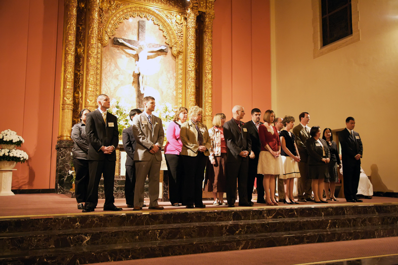
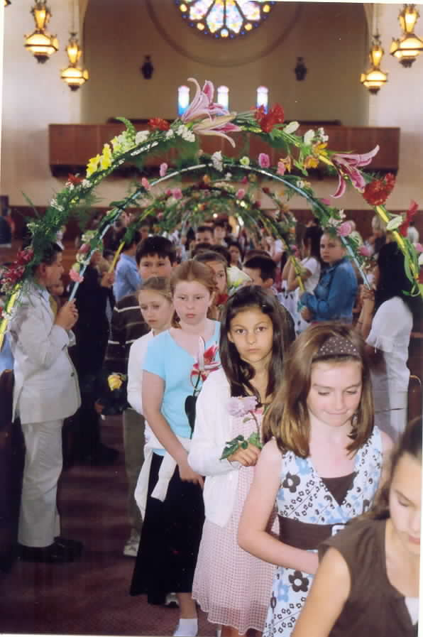
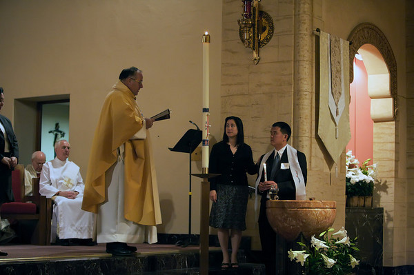

Dear Friends:
Welcome to the website of Saint Gregory’s parish. For the past sixty years, Saint Gregory’s has been serving the people of San Mateo preaching the Gospel, educating our young people, celebrating the Eucharist, forming friendships in community, serving the poor and the needy, comforting the sorrowing and attempting to make the love and grace of our God more visible in our world.
Saint Gregory’s seeks to be a welcoming community, and we hope that the information provided here will acquaint you with the diverse ministries and activities that form our parish life.
Saint Gregory’s seeks to be a faith-filled community, and we hope that this website will open up for you the many ways that our parish provides to grow in the Lord.
Saint Gregory’s seeks to be a serving community, and we hope that in these pages you will find a call to reach out with your time and talents to those in need, whether that need be material or spiritual or social.
The Eucharist is the center of our life of faith and worship; for it embodies the presence of the Lord himself in our midst and in our lives. Our parish family seeks to continue the tradition of warmth and intergenerational community that has been part of Saint Gregory’s ever since a handful of families began worshiping together in the old Manor Theater on 25th Avenue more than sixty years ago.
-Most Reverend Robert W. McElroy
